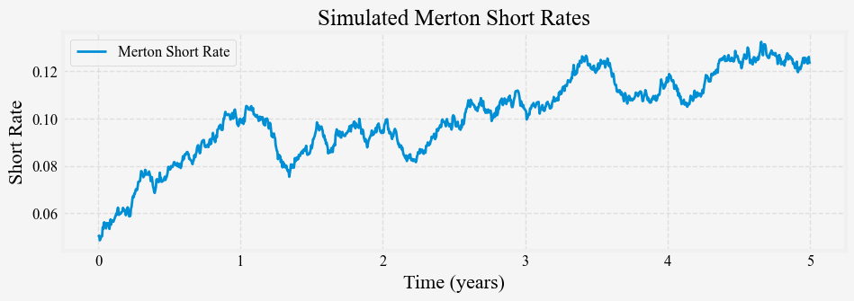
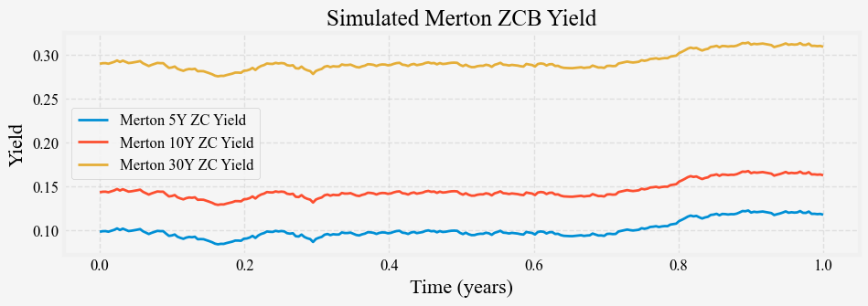
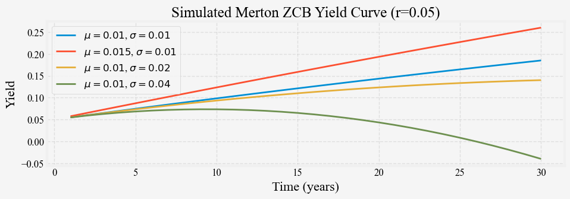

2024-05-19
Let us continue our refresher series on short-rate models. We introduced the Merton short rate model in the previous post. In this post, we will show how to simulate short rates from the Merton model and how to calibrate its parameters to market-observed short rates. Whereas the previous post deals with the mathematical aspects, this post deals with the computational ones.
We now show how to simulate short rates using the Merton model with the Euler-Maruyama discretization, a simple and intuitive way to discretize a continuous-time stochastic process by a sequence of small time steps. It is a first-order numerical method for approximating stochastic differential equations (SDEs). As a refresher, consider a general d-dimensional SDE of the form:
dX_t = a(X_t, t) dt + b(X_t, t) dW_t
where: - X_t \in \mathbb{R}^d is the state vector at time t, - a(X_t, t) is the drift term, - b(X_t, t) is the diffusion term (a matrix), - W_t is a m-dimensional Wiener process.
The Euler-Maruyama approximation for this SDE, over a small time step \Delta t, is given by:
X_{t + \Delta t} = X_t + a(X_t, t) \Delta t + b(X_t, t) \sqrt{\Delta t} \cdot Z_t
where Z_t \sim \mathcal{N}(0, I_m) is a standard normal random vector of dimension m.
Applying the above definition to the Merton model and re-arrange we get
\Delta r_t = r_{t + \Delta t} - r_t = \mu \Delta t + \sigma \sqrt{\Delta t} \cdot \epsilon_t
The following code simulates t years of short rates at time steps of size dt.
def simulate_merton_short_rates(r0, mu, sigma, t, dt, seed=None):
"""
Simulates the Merton short rates model using the
Euler-Maruyama discretization. As the drift does
not depend on the short rate, each increment can
be simulated independently.
Parameters:
r0 (float): Initial (current) short rate.
mu (float): The annualized drift of the short rate process.
sigma (float): Annualized volatility of the short rate process.
t (float): Number of years to simulate.
dt (float): Time step size.
Returns:
times (np.ndarray): Time steps.
rates (np.ndarray): Simulated short rates.
"""
np.random.seed(seed)
nd = int(t / dt)
drift = mu * dt
diffusion = sigma * np.random.normal(0, np.sqrt(dt), nd - 1)
dr = drift + diffusion
times = np.linspace(0, t, nd)
rates = np.array(list(accumulate(dr, initial=r0)))
return times, ratesThe Euler-Maruyama discretization is only an approximation because it ignores errors from time aggregation. The error due to time aggregation arises because the Euler-Maruyama method assumes that the drift and diffusion terms remain constant over each discrete time step, which is generally not true for most stochastic processes.
Consider a more general SDE:
$ dr_t = (t, r_t) dt + (t, r_t) dW_t $
The Euler-Maruyama discretization approximates this as:
X_{t+\Delta t} \approx X_t + \mu(X_t, t)\Delta t + \sigma(X_t, t)\sqrt{\Delta t}Z_t
where Z_t \sim N(0,1).
However, this approximation effectively assumes that \mu(X_s, s) \approx \mu(X_t, t) and \sigma(X_s, s) \approx \sigma(X_t, t) for all s \in [t, t+\Delta t], which introduces an error.
The true solution involves integrating over the interval:
X_{t+\Delta t} = X_t + \int_t^{t+\Delta t} \mu(X_s, s)ds + \int_t^{t+\Delta t} \sigma(X_s, s)dW_s
The difference between this true solution and the Euler-Maruyama approximation is the time aggregation error. We call the true solution the exact method for discretization.
For simple processes like the Merton model, where \mu and \sigma are constant, the two methods coincide and this error is zero. However, for more complex models with state-dependent drift or diffusion terms, the term \int_0^{\Delta t} \mu(s, r_s) ds \neq \mu(t, r_t) \Delta t, and this error can be significant, especially when using larger time steps.
Higher-order numerical schemes, such as the Milstein scheme or stochastic Runge-Kutta methods, can reduce this error by incorporating additional terms that account for the variation of \mu and \sigma over the time step. However, these methods are often more computationally intensive and may require the calculation of additional derivatives.
In practice, the choice between Euler-Maruyama and higher-order methods involves a trade-off between computational simplicity and accuracy, depending on the specific requirements of the problem at hand. Nevertheless, the error from time aggregation is “small” for “well-behaved” stochastic processes. We will discuss this in greater detail in the simulation and calibration of the Vasicek model.
Using \mu = 0.02, \sigma = 0.02 and $ r_0 = 0.05$, Figure 1 shows a simulated path of the short rate process.

In the previous post, we derived the price of a ZCB from the short-rate model in two different ways: 1. directly solve the SDE, and 2. guess the form of the solution as A(t, T) \exp (-B(t, T) r_t) and solve for A and B. As it turns out, most common short-rate models have bond price solutions in the form of A(t, T) \exp (-B(t, T) r_t), so we will use this fact when we implement our short-rate models. Below is a simple Python implementation of the ZCB price and yields.
def B(t, T):
return T - t
def A(t, T, mu, sigma):
tau = T - t
return np.exp(-mu * tau**2 / 2 + (sigma**2 * tau**3) / 6)
def zero_coupon_bond_price(t, T, r, mu, sigma):
return A(t, T, mu, sigma) * np.exp(-B(t, T) * r)
def zero_coupon_yield(t, T, r, mu, sigma):
price = zero_coupon_bond_price(t, T, r, mu, sigma)
return -np.log(price) / (T - t)We use the above formula to simulate the 5-, 10-, and 30-year yields using the above parameters, and Figure 2 shows the results.

We can see that the three long rates are all parallel shifts of one another and the short rates. The simple Merton model is capable of generating only parallel shifts. We can also simulate its term structure with some combination of \mu and \sigma, and Figure 3 shows the results.

When \sigma is small relative to \mu, the constant drift term dominates the term structure and is upward-sloping, almost in a straight line. When \sigma is large, the long end of the term structure is dominated by the volatility term and is downward sloping due to the convexity effects.
Now that we can simulate the short rates from the Merton model, we can learn about the reverse process, that is, the process of inferring the model parameters from the simulated short rates or market-observed short rates. This process is known as calibration. Note that we are yet not talking about calibrating the model to the cross-sectional yield curve. For a short-rate model, only the short-rates are assumed to be observed under the physical measure, and all longer-tenor yields are observed under the risk-neutral measure. The parameters we calibrated from the market-observed short rates are those under the physical measure and cannot be used directly to price longer-term bonds. Said differently, the parameters calibrated from the yield curves are those under the risk-neutral measure and cannot be used to forecast the short rates.
There are at least two ways to calibrate Merton’s model to market-observed short rates: maximum likelihood estimation (MLE) and the general method of moments (GMM). We will cover only MLE method in this post. As MLE is taught in most introductory statistics and econometrics courses, we will only provide a brief review of the method then move on to its application to the Merton model.
Maximum Likelihood Estimation (MLE) is a method for estimating the parameters of a statistical model given observations. The idea is to find the model parameters that make the observed data most probable.
The MLE can be calculated in the following steps:
The likelihood function is often denoted as L heta | x), where $ heta$ represents the model parameters and x represents the observed data.
To derive the likelihood function for the Merton model, we need to consider the probability distribution of the changes in the short rate. As we derived above, under the Merton model, these changes are independent and identically normal distributed:
\delta r_t = r_{\left(t+\Delta t\right)} - r_t \sim N\left(\mu\delta t, \sigma^2\delta t\right)
Given a series of observed short rates \left\{r_0, r_1, ..., r_n\right\} at times \left\{t_0, t_1, ..., t_n\right\}, we can write the likelihood function as:
L\left(\mu, \sigma \vert r_0, ..., r_n\right) = \prod_{i=1}^n f\left(r_i \vert r_{i-1}, \mu, \sigma\right)
where f is the probability density function of the normal distribution:
f\left(r_i \vert r_{i-1}, \mu, \sigma\right) = \frac{1}{\sigma\sqrt{2\pi\delta t_i}} \exp\left(-\frac{(r_i - r_{i-1} - \mu\delta t_i)^2}{2\sigma^2\delta t_i}\right)
Taking the logarithm, we get the log-likelihood function:
ln(L(\mu, \sigma \vert r_0, ..., r_n)) = \sum_{i=1}^n \left[-ln(\sigma) - 0.5ln\left(2\pi\delta t_i\right) - \left(r_i - r_{i-1} - \mu\delta t_i\right)^2 / (2\sigma^2\delta t_i)\right]
To find the maximum likelihood estimates, we can find the values of \mu and \sigma that maximize this log-likelihood function. We take the partial derivatives of the log-likelihood with respect to \mu and \sigma, setting them to zero, and solving the resulting equations to get an analytical solution.
For the Merton model, we can derive closed-form solutions for the maximum likelihood estimators:
\begin{equation} \begin{aligned} \mu_{MLE} &= \frac{1}{T} \sum_{i=1}^{n} (r_i - r_{i-1}) \\ \sigma^2_{MLE} &= \frac{1}{T} \sum_{i=1}^{n} (r_i - r_{i-1} - \mu_{MLE} \delta t_i)^2 \\ \end{aligned} \end{equation}
where T is the number of periods.
Numerical optimization techniques are often used to maximize the log-likelihood function, especially for more complex models where closed-form solutions are unavailable.
With the above, we can now implement the MLE for the Merton model:
def merton_log_likelihood(params, rates, dt):
mu, sigma = params
n = len(rates) - 1
ll = -0.5 * n * np.log(2 * np.pi * sigma**2 * dt)
ll -= np.sum((rates[1:] - rates[:-1] - mu * dt)**2) / (2 * sigma**2 * dt)
return -ll
def merton_mle_calibration(rates, dt):
initial_guess = [0.01, 0.01]
result = minimize(merton_log_likelihood, initial_guess, args=(rates, dt), method='L-BFGS-B')
return result.xWe generate 5000 paths of the short rate process using the same \mu = 0.02, \sigma = 0.02 and $ r_0 = 0.05$ for t=5 years, and apply the maximum likelihood to estimate the parameters from each path. Figure 4 shows the distribution of the MLE estimates for \mu and \sigma.
We can see immediately that the MLE estimates of \mu, while unbiased, have a high variance. This is consistent with the observation that the mean of a distribution is a lot harder to estimate precisely than the variance. This problem is even more pronounced for the more complicated processes, such as the Vasicek model. We will discuss this in length in the post 4 on calibrating the Vasicek model.
We now know the Merton model, a simple one-factor short-rate equilibrium model that is also an affine term-structure model. In the previous post, we derived the price of a ZCB from the short-rate model and wrote a simple Python implementation of the ZCB price and yields.
In this post, We also learn how to simulate short rates with this model and how to calibrate its parameters from market-observed short rates.
We learn that the ZCB prices and yields are computed under the risk-neutral measure and calibrated to market-observed short rates yield parameters under the physical measure. However, the relationship of the parameters under these two measures still needs to be clarified, which prevents us from calibrating the model to market-observed yield curves. We will cover these topics much later, after introducing another popular short-rate model, the Vasicek model, in the next post.